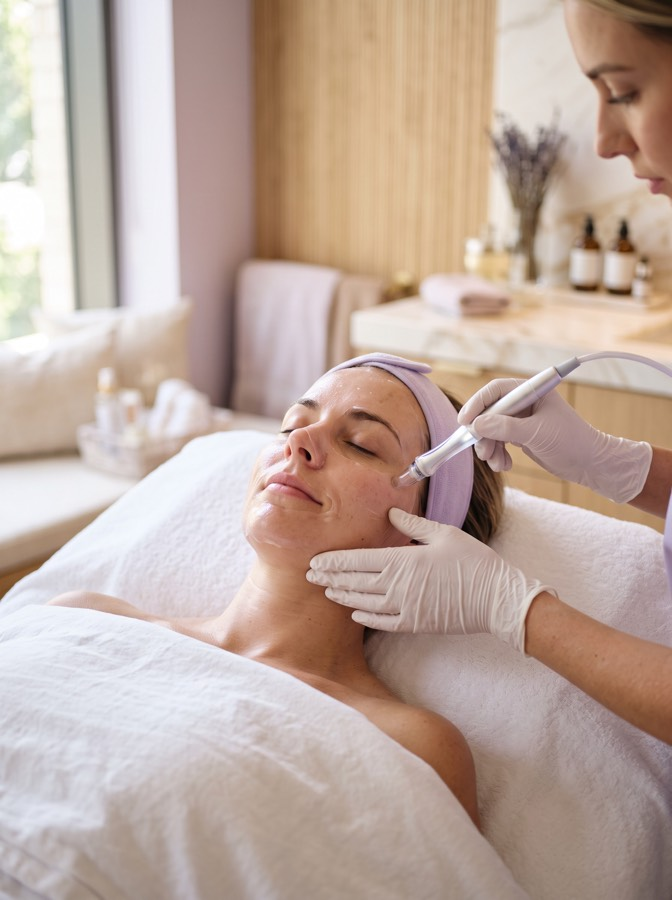
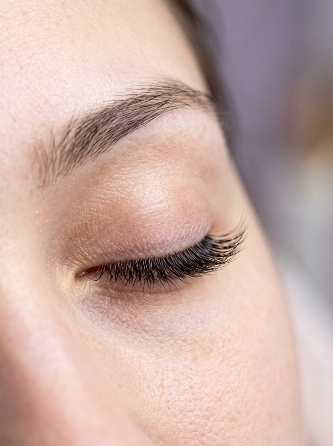
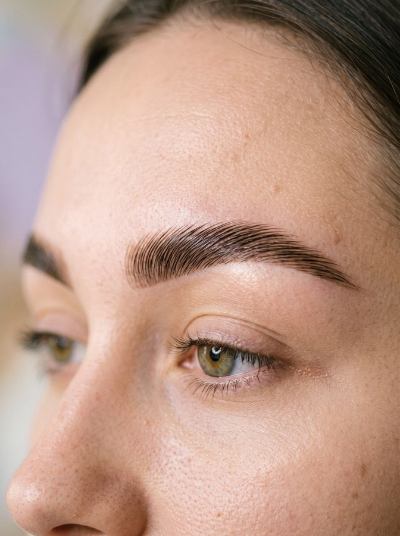
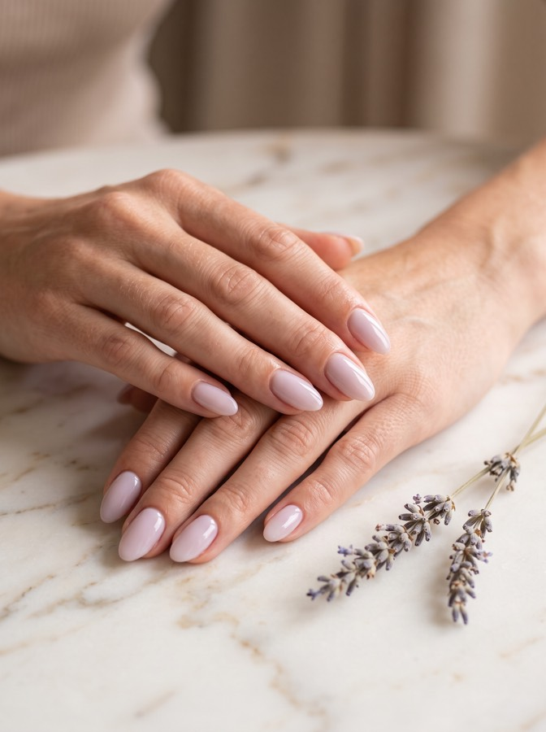
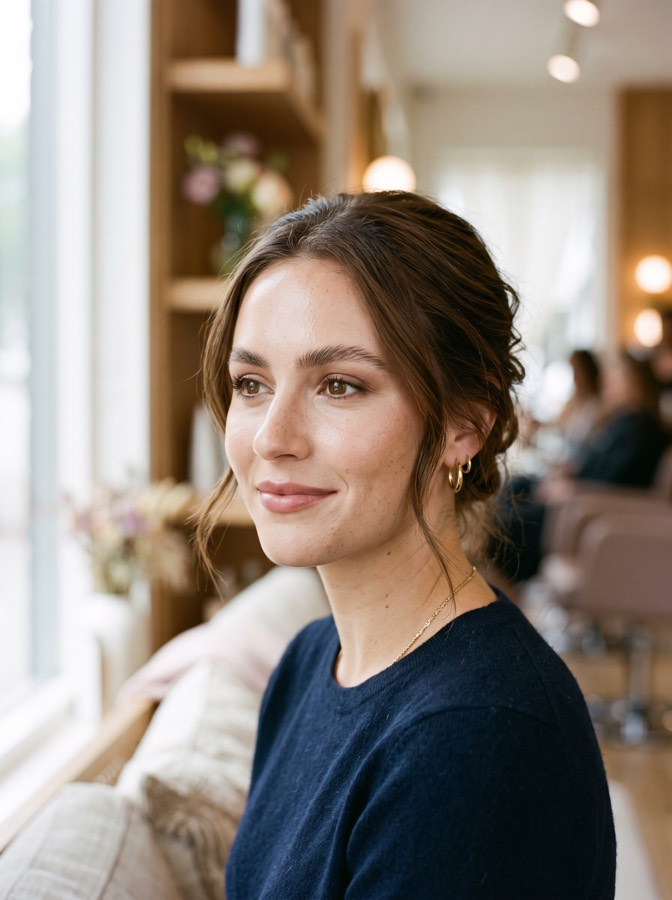
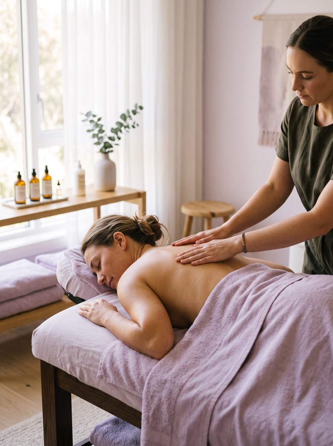

Strona demonstracyjna (portfolio). Marka, dane, ceny i zdjęcia są fikcyjne.
Zabiegi i cennik
Wszystko, zanim usiądziesz.
Przy każdym zabiegu podajemy cenę, czas, przebieg, przeciwwskazania i to, jak się przygotować. Żadnych niespodzianek przy kasie.

01 · Cera
Pielęgnacja twarzy i oczyszczanie
Zabieg dobieramy po diagnozie skóry, a nie z góry z cennika. Sprawdza się przy zaskórnikach, szarej cerze, odwodnieniu i pierwszych zmarszczkach.
- Wywiad i diagnoza skóry.
- Demakijaż i peeling — enzymatyczny albo kwasowy.
- Ekstrakcja zaskórników, jeśli jest potrzebna.
- Serum wmasowane lub wprowadzone sonoforezą.
- Maska dopasowana do potrzeb i krem z filtrem.
Aktywna opryszczka, świeże rany i stany zapalne skóry, izotretynoina obecnie lub w ciągu ostatnich 6 miesięcy, świeża opalenizna przy zabiegach z kwasami. W ciąży odradzamy mocne kwasy — łagodna wersja jest bezpieczna. Ostateczną decyzję podejmujemy po wywiadzie na miejscu.
Przyjdź bez makijażu albo zdejmiemy go na miejscu. Na 7 dni przed zabiegiem z kwasami odstaw retinol i mocne peelingi. Nie opalaj się przez 2 tygodnie wcześniej.
Przez 24 godziny bez makijażu, sauny, basenu i intensywnego wysiłku. Po kwasach filtr SPF 50 codziennie przez 2 tygodnie. Lekkie zaczerwienienie może utrzymać się kilka godzin, a po kwasach delikatne złuszczanie przez 2–4 dni.
Wygładzenie i rozświetlenie widać od razu. Przy konkretnym problemie robimy serię 4–6 zabiegów co 2–3 tygodnie, podtrzymująco wystarcza raz w miesiącu.

02 · Oprawa oka
Stylizacja i przedłużanie rzęs
Metodę i grubość dobieramy do kondycji Twoich własnych rzęs. Przy słabych odradzamy ciężkie objętości — wolimy powiedzieć „nie" niż zniszczyć naturalne rzęsy.
- Oczyszczenie rzęs z tłuszczu i resztek kosmetyków.
- Zabezpieczenie dolnej powieki płatkiem.
- Aplikacja rzęsa po rzęsie klejem medycznym.
- Rozczesanie i kontrola separacji.
Leżysz z zamkniętymi oczami — większość klientek po prostu zasypia.
Alergia na cyjanoakrylat (klej), zapalenie spojówek lub jęczmień, zabieg okulistyczny w ciągu ostatnich 3 miesięcy, chemioterapia w trakcie, łuszczące się powieki. Przy podejrzeniu alergii robimy bezpłatną próbę uczuleniową 48 godzin przed wizytą.
Przyjdź bez makijażu oczu. Na 2 dni przed odstaw olejki i odżywki do rzęs, nie podkręcaj ich. Odpuść kawę bezpośrednio przed wizytą — drżenie powiek naprawdę utrudnia pracę.
Przez 24 godziny nie moczyć, bez sauny i basenu. Potem myj delikatnie pianką do rzęs i rozczesuj szczoteczką co rano. Bez kosmetyków olejowych w okolicy oka, bez podkręcania i bez tuszu wodoodpornego.
Utrzymuje się 3–5 tygodni. Uzupełnienie zalecamy co 3 tygodnie — rzęsy wypadają naturalnie razem z rzęsą własną, to normalny cykl.

03 · Oprawa oka
Laminacja i regulacja brwi
Dla brwi niesfornych, rosnących w różne strony, rzadkich albo asymetrycznych. Laminacja układa i unosi włoski, przez co brew optycznie gęstnieje.
- Projekt kształtu dopasowany do rysów twarzy.
- Preparat unoszący, potem utrwalacz.
- Opcjonalnie farbka lub henna.
- Odżywka i regulacja pęsetą lub woskiem.
Świeże rany i podrażnienia w okolicy brwi, aktywny trądzik w tym miejscu, alergia na preparaty do trwałej, makijaż permanentny wykonany krócej niż 4 tygodnie temu. W ciąży i przy karmieniu odradzamy koloryzację — sama laminacja jest bezpieczna.
Nie reguluj brwi przez 2 tygodnie przed wizytą. Potrzebujemy materiału, żeby wymodelować kształt — z ogolonej brwi nie da się nic zbudować.
Przez 24 godziny nie moczyć brwi, bez sauny i basenu, nie śpij twarzą w poduszce. Od drugiego dnia odżywka olejowa na noc.
Utrzymuje się 5–6 tygodni. Nie powtarzamy częściej niż co 6 tygodni, żeby nie przesuszyć włosków.

04 · Dłonie i stopy
Manicure i pedicure hybrydowy
Trwały kolor i uporządkowana płytka. Proste zdobienia są w cenie, bardziej rozbudowane wyceniamy od 20 do 60 zł.
- Opracowanie skórek frezarką.
- Nadanie kształtu i matowienie płytki.
- Baza, dwie warstwy koloru i top — każda utwardzana w lampie.
- Oliwka do skórek na koniec.
Grzybica paznokci, aktywne stany zapalne wału paznokciowego, świeże skaleczenia, łuszczyca paznokci w fazie zaostrzenia.
Przyjdź bez lakieru klasycznego. Jeśli masz hybrydę z innego salonu, uprzedź nas przy rezerwacji — doliczymy czas na zdjęcie (50 zł, a przy zabiegu u nas bezpłatnie).
Oliwka do skórek codziennie. Rękawiczki przy sprzątaniu i pracy z chemią. Nie odrywaj odrostu — to najczęstsza przyczyna uszkodzenia płytki.
Utrzymuje się 3–4 tygodnie. Uzupełnienie co 3–4 tygodnie.

05 · Na wyjątkową okazję
Makijaż okolicznościowy i ślubny
Wesele, studniówka, sesja, bal. Dobieramy do kształtu oka, kolorytu skóry i — co ważne — do oświetlenia, w jakim będziesz tego dnia.
- Rozmowa o stylizacji i inspiracjach.
- Przygotowanie i nawilżenie skóry, baza.
- Podkład dobierany w świetle dziennym, nie przy lampie.
- Oczy, usta, utrwalenie mgiełką.
Aktywna opryszczka, aktywne stany zapalne oka, świeży zabieg z kwasami lub mikronakłuwanie — tu potrzebny jest tydzień odstępu.
Przyjdź z oczyszczoną i nawilżoną twarzą. Zabieg oczyszczający zaplanuj najpóźniej tydzień wcześniej — nigdy dzień przed. Zabierz zdjęcia inspiracji. Na makijaż ślubny załóż bluzkę rozpinaną, żeby nie zdejmować jej przez głowę.
Nie dotykaj twarzy. Mgiełkę utrwalającą możesz zabrać ze sobą na poprawki. Makijaż trzyma 10–14 godzin.
Przy makijażu ślubnym próba jest w cenie. Robimy ją w osobnym terminie, najlepiej 2–4 tygodnie przed uroczystością.

06 · Ciało
Masaż relaksacyjny i depilacja woskiem
Masaż przy napięciu karku i pleców, pracy siedzącej i stresie. Depilacja wszystkich partii — na okolice wrażliwe używamy wosku twardego.
Wąsik 40 zł · pachy 60 zł · łydki 90 zł · całe nogi 150 zł · bikini klasyczne 90 zł. Masaż pleców 160 zł za 30 minut, całe ciało 240 zł za godzinę.
Gorączka, świeże urazy, zakrzepica, zaawansowana ciąża, choroby nowotworowe bez zgody lekarza prowadzącego.
Żylaki w miejscu zabiegu, świeża opalenizna, retinoidy doustne, nieuregulowana cukrzyca.
Włos musi mieć minimum 5 mm — nie gol się przez 2 tygodnie przed wizytą. Nie opalaj się przez 24 godziny wcześniej.
Przez 24 godziny bez sauny, basenu, solarium i obcisłych ubrań. Od trzeciego dnia peeling — to najskuteczniejsza profilaktyka wrastających włosków. Efekt utrzymuje się 3–4 tygodnie, a przy regularności włos wyraźnie słabnie.
Dobrze wiedzieć
Zasady, które obowiązują u nas.
Narzędzia wielorazowe przechodzą dezynfekcję, mycie w myjce ultradźwiękowej i sterylizację w autoklawie klasy B — tym samym standardzie, co w gabinecie stomatologicznym. Przechowujemy je w zgrzanych torebkach ze wskaźnikiem, który zmienia kolor dopiero po prawidłowym cyklu. Torebkę otwieramy przy Tobie. Skuteczność autoklawu kontrolujemy testami spor.
Pilniki, separatory, kapturki ścierne i bielizna na leżankę są jednorazowe — wyrzucamy je po każdej klientce. Pracujemy w rękawiczkach nitrylowych, a przy frezarce dodatkowo w maseczce i z pochłaniaczem pyłu na stanowisku.
Pracujemy wyłącznie na umówionych terminach — jedna klientka w danym czasie. Przy zabiegach powyżej 250 zł i przy makijażu ślubnym pobieramy 100 zł zaliczki.
Bezpłatnie do 24 godzin przed terminem. Później zaliczka przepada, a przy wizytach bez zaliczki prosimy o pokrycie połowy ceny przy kolejnej rezerwacji. Spóźnienie powyżej 15 minut może oznaczać skrócenie zabiegu.
Gotówka, karta i BLIK. Vouchery wystawiamy na kwotę albo na konkretny zabieg, ważne 6 miesięcy.
Nie wykonujemy makijażu permanentnego — możemy polecić sprawdzoną linergistkę. Nie stawiamy też diagnoz medycznych; przy wątpliwościach kierujemy do dermatologa.